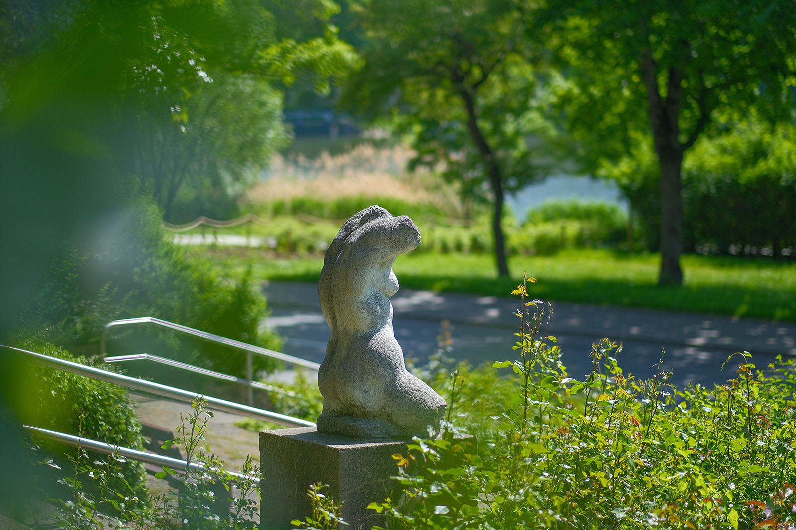
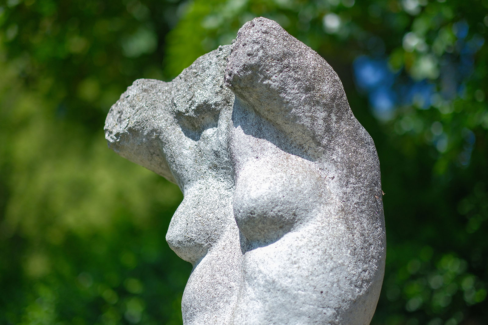
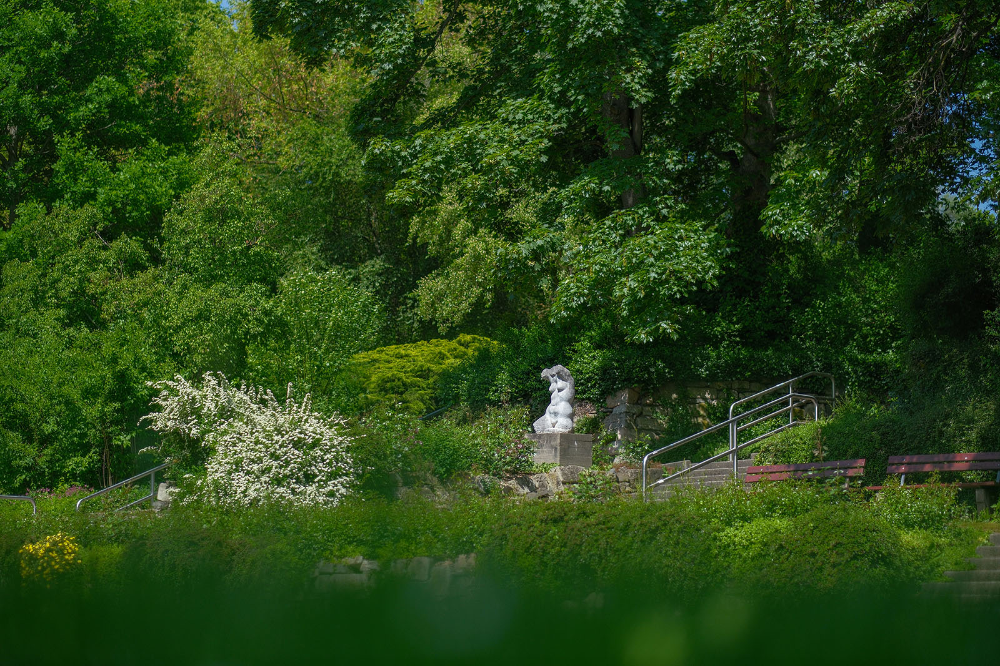
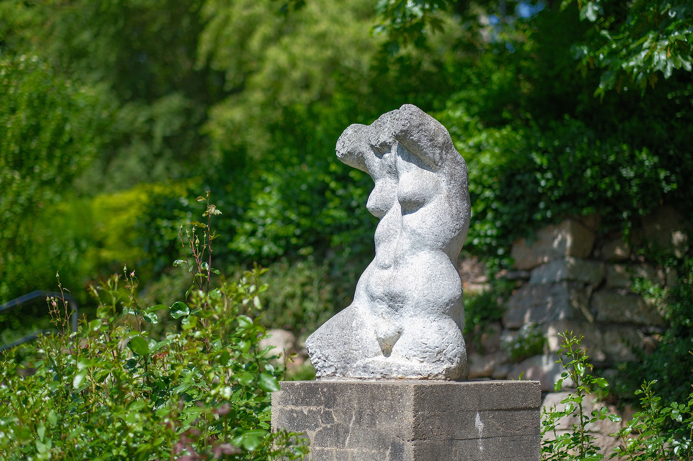

Recherche und Werkbeschreibung: Roman Pilz. Text und Fotografien wechseln sich wie in einem Magazin ab. Ein Klick auf ein Bild öffnet die Großansicht.
Die heutige, meist Schloßbergpark genannte Parkanlage zwischen Schloßteichstraße, Hechlerstraße und Salzstraße wurde ab 1980 zum Anlass des V. Festivals der Freundschaft der Jugend der DDR und der UdSSR aufwendig gestaltet. Tausende von Jugendlichen aus den beiden sozialistischen Bruderstaaten trafen sich im heutigen Chemnitz zum Feiern.
1982 wurde der Park der Jugend "V. Festival" im Verlauf seiner mehrjährigen Realisierung mit mehreren Kunstwerken ausgestattet – so wie es sich für jedes größere Bauvorhaben mit repräsentativem Charakter in der DDR etabliert hatte. Ein Werk von Harald Stephan, der sich insbesondere in den 1970er Jahren in Karl-Marx-Stadt und darüber hinaus einen Namen als Gestalter von Freiplastiken gemacht hatte, wurde neben weiteren Arbeiten von Sabina Grzimek, Ingeborg Hunzinger und Wilfried Fitzenreiter ausgewählt.
Feier des Lebens
Die Betonplastik „Großer Torso“ (1971/1982) von Harald Stephan am Schloßteich
Die Plastik entstand als Entwurf schon 1971. In der Neuen Sächsischen Galerie, die heute die ehemalige Sammlung des Bezirkskunstzentrums Karl-Marx-Stadt betreut, befinden sich zwei weibliche Torsi, die ganz ähnlich gestaltet sind und ebenfalls als Betonguss ausgeführt wurden. Harald führte den heute auf einem Betonsockel in einem Rosenbeet platzierten Torso in doppelter Größe wohl ebenfalls in den 1970er Jahren aus, bevor er von der Stadt angekauft wurde.
Der Beton der Plastik ist im Vergleich zum Sockel hell gefärbt und erinnert an Marmor. Der Torso als Motiv der Bildhauerei ist besonders seit der Renaissance beliebt. Damals wurden zahlreiche antike Meisterwerke wiederentdeckt bzw. neu gewürdigt. Diese hatten im Laufe der Jahrhunderte oft mehr oder weniger große Teile, meist die empfindlichen Gliedmaßen, verloren, erstaunten aber trotz allem immer noch wegen ihrer Schönheit und Kunstfertigkeit. Gerade der Kontrast zwischen Schönheit und Verlust reizte die Fantasie folgender Künstler und fügt der Darstellung des Menschen eine neue, hintergründige Tiefe hinzu. Je nach Charakter kann der Bildhauer dabei mehr das Register romantischer Melancholie oder idealistischer Überhöhung wählen.

Harald Stephan, der seine Ausbildung an der Akademie in Dresden begann, wird die klassischen Vorbilder wohl in akademischen Studienmodellen kennengelernt haben. Er schätzte das Motiv des Torsos und setzte es sowohl als Einzel- als auch als Doppelfigur um (z.B. "Torso des Heiligen Sebastian", 1975, Kunstsammlungen Chemnitz oder "Torsopaar", 1974).
Hier bei diesem weiblichen Torso wählte er einen realistischen Zugang – bei ihm ist der junge Körper kraftvoll und trainiert, zeigt aber zugleich die natürlichen Rundungen der weiblichen Anatomie. Das Reizvolle des Fragmentarischen ist hier, die Bewegung der Frau im Geiste zu bestimmen: Die Arme sind wohl hoch erhoben und ein Bein ebenfalls vom Boden gelöst – vielleicht ist es eine Tänzerin oder eine Turnerin, die im nächsten Moment ein Rad schlagen will?

Die Jugend, die im steinernen Kunstwerk lange andauern kann, ist im menschlichen Leben kurz – aber in Gedanken und Biografien wirkt sie meist umso länger nach. So feiert der Park mit Stephans Plastik auch heute noch die Jugend, auch wenn der konkrete Anlass nur noch von einem steinernen Schriftrelief am Treppenaufgang angezeigt wird und ansonsten wohl nicht mehr im Bewusstsein vieler Menschen präsent ist. Heute ist meist vom Schlossbergpark die Rede und die wenigsten werden in seiner schönen Brunnenanlage das Logo der 1947 erstmalig organisierten "Weltfestspiele der Jugend und Studenten" erkennen.

Feier des Lebens
Die Betonplastik „Großer Torso“ (1971/1982) von Harald Stephan am Schloßteich
